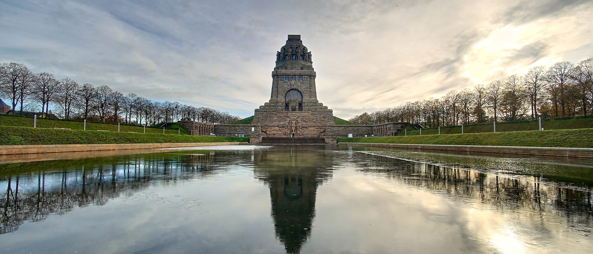

Projekte
Zwölf fertig, eines offen.
Jedes Vorhaben mit Abschlussdatum, Gesamtkosten und dem Anteil, den der Förderverein aus Spenden getragen hat. Nichts davon ist gerundet worden.
Startseite → Projekte
Offen — seit 2025
Öffnung der Katakomben.
Die Katakombenebene unter der Krypta ist heute nur für geführte Gruppen zugänglich. Dort steht eine Ausstellung zur Entstehungsgeschichte des Denkmals, und dort wird die Bauingenieurleistung der ursprünglichen Erbauer sichtbar — der Beton, auf dem alles steht.
Damit die Ebene dauerhaft für alle öffnen kann, fehlt ein zweiter, gesetzlich vorgeschriebener Fluchtweg. Geplant ist eine vierläufige, neu zu schaffende Stahltreppe als zweiter baulicher Rettungsweg. Dazu kommen weitere bauliche Maßnahmen, unter anderem die Anpassung der elektrotechnischen Anlagen.
sind für das Vorhaben veranschlagt.
Zum Vergleich: Das Wasserbecken, in dem sich das Denkmal spiegelt, hat 2,4 Millionen Euro gekostet. 960.000 Euro davon kamen aus Spenden dieses Vereins.
Abgeschlossen
Was seit dem Jahr 2000
fertig geworden ist.
Links das Abschlussdatum, rechts die Gesamtkosten und daneben der Spendenanteil des Vereins. Bei den großen Vorhaben war er der Anteil, ohne den nicht angefangen worden wäre.
Aufstellung von acht Sitzbänken in den Außenanlagen
Das erste Vorhaben des Vereins, keine zwei Jahre nach der Gründung.
Wiedereinbau des Aufzugs von der Krypta
60.000 € Sachspende der Firma OTIS, 100.000 € aus Geldspenden. Der erste Schritt zu einem Denkmal, das man ohne Treppensteigen erreichen kann.
Beseitigung der Kriegsschäden in der Ruhmeshalle
Finanziert von mehreren Institutionen; 25.565 € steuerte der Förderverein aus Spenden bei.
Restaurierung des Stifterzimmers
Der historische Raum, in dem die Messingtafeln der größten Spender hängen.
Barrierefreier Zugang
Vollständig aus Spenden finanziert.
Haupttreppe vom Wasserbecken zum Eingangsplateau
Fertig zum 100. Jahrestag der Einweihung. 200.000 € kamen von der Stadt Leipzig, 650.000 € aus Spenden. Auf den Postamenten dieser Treppe sind die Bronzeplatten mit den Spendernamen verankert.
Kopfbauten mit den dazwischenliegenden Treppen
Die Pylonen der großen Freitreppe samt Aufgängen.
Kutscherstube
Das kleinste abgeschlossene Vorhaben der Liste.
Wasserbecken mit Wegeanlage
Das größte Vorhaben, an dem sich der Verein beteiligt hat — und der bekannteste Blick auf das Denkmal.
Lindentreppen
Die seitlichen Aufgänge durch die Lindenreihen des Geländes.
Barrierefreie Rampen
80.000 € davon aus Spenden des Vereins. Seither erreichen Rollstuhlfahrerinnen und Rollstuhlfahrer das Denkmal über eine Rampe.
Umrüstung der Außenbeleuchtung auf LED-Technik
Im selben Jahr wurden die Außenanlagen insgesamt fertiggestellt.
Insgesamt hat der Verein seit 1998 über 3,5 Millionen Euro an Spenden eingeworben. Ein Teil davon ist in Vorhaben geflossen, die in dieser Liste nicht als eigenes Projekt stehen — etwa in Sitzbänke, Ausstattung und die Lobbyarbeit für das Denkmal.

Weitermachen
Das nächste Bauteil braucht wieder Geld.
Mitgliedsbeiträge tragen die laufende Arbeit, Spenden und Stifterbriefe die Bauvorhaben. Beides geht hier.